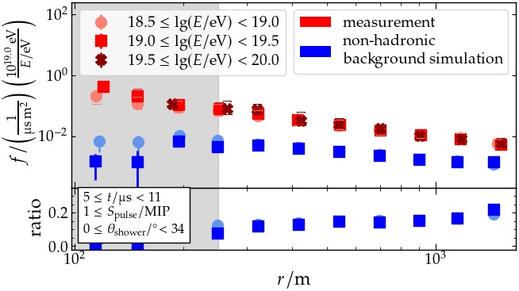
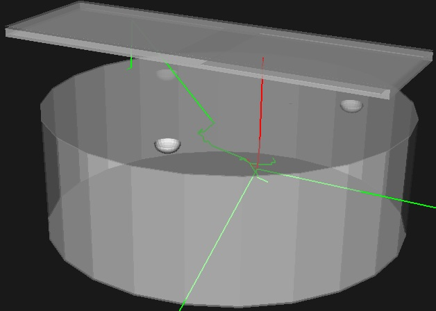
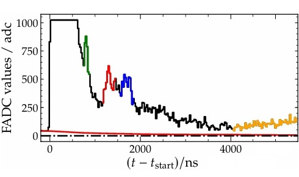

Detector data, simulation, and reconstruction at the Pierre Auger Observatory.
My current work connects detector-level measurements with physics questions about
extensive air showers and hadronic interactions at ultra-high energies.

Neutron analysis image
Neutrons and hadronic interactions in extensive air showers
I study delayed and subluminal detector signals that can carry information about the
neutron component of extensive air showers. These observables help connect surface
detector measurements to hadronic interactions at energies far beyond accelerator
reach.
extensive air showersneutronshadronic interactions

Detector simulation image
Detector response, scintillator quenching, and simulation
Detector simulations translate particle-level air-shower output into measurable
signals. I work on response effects such as scintillator quenching, shielding, and
hadronic processes in station simulations to improve the interpretation of AugerPrime
surface detector data.
Geant4scintillatorsdetector response

Signal processing image
Signal processing and reconstruction methods for particle detector data
Particle detectors produce time traces with calibration effects, baseline structure,
afterpulsing, and channel-dependent systematics. I develop and validate reconstruction
methods that make these signals more reliable for downstream physics analyses.
signal processingbaseline algorithmsPMT traces
Computing & Data Analysis
Large-scale detector and air shower simulations are executed on distributed HTCondor
computing clusters, often involving thousands of individual jobs. The resulting
datasets are processed and analyzed using Python, NumPy, pandas, and matplotlib, with
a focus on simulation-to-data comparisons, visualization, and statistical studies.